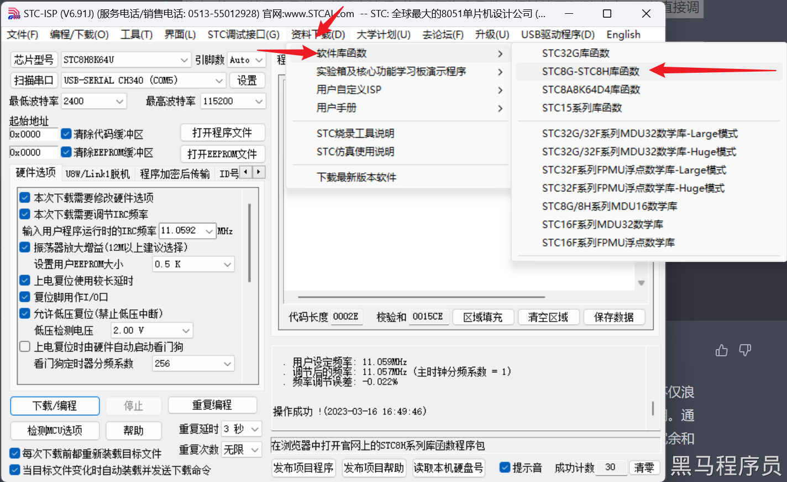
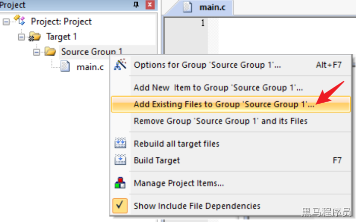
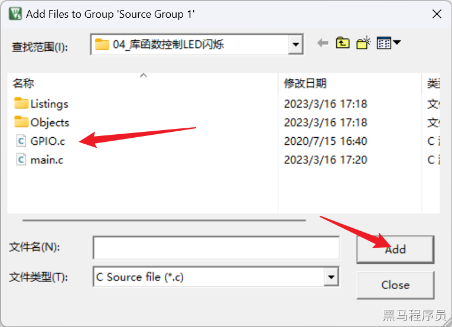
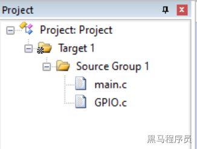

<!DOCTYPE lake>
<h3 data-lake-id="npOBJ" id="npOBJ"><span data-lake-id="ube078ea1" id="ube078ea1">使用库函数点灯</span></h3><ol list="u7596f291"><li data-lake-id="ub029ee40" fid="ud01405cf" id="ub029ee40"><span data-lake-id="uebfeaba9" id="uebfeaba9">导入库函数。</span></li></ol><p data-lake-id="u3449e21e" id="u3449e21e" style="padding-left: 2em"><span data-lake-id="ufe5b166e" id="ufe5b166e">下载STC8H的库函数：</span><a class="yuque-card-link" href="../../_assets/025f0c49df5b75c85bf14a88.zip">STC8G-STC8H-LIB-DEMO-CODE_2023.07.17_优化版.zip</a></p><p data-lake-id="u06990872" id="u06990872" style="padding-left: 2em"></p><p data-lake-id="ua4237bc6" id="ua4237bc6" style="padding-left: 2em"><span data-lake-id="uf1d639af" id="uf1d639af">来到库函数的目录下，拷贝以下文件：</span></p><ul list="u0a2e4af5"><li data-lake-id="u43d51672" fid="uff2d5fae" id="u43d51672"><code data-lake-id="ub12f9144" id="ub12f9144"><span data-lake-id="u883793d3" id="u883793d3">Config.h</span></code></li><li data-lake-id="u889abfc5" fid="uff2d5fae" id="u889abfc5"><code data-lake-id="ue28c5e76" id="ue28c5e76"><span data-lake-id="u4a9e288f" id="u4a9e288f">Type_def.h</span></code></li><li data-lake-id="u4f8fc1ad" fid="uff2d5fae" id="u4f8fc1ad"><code data-lake-id="u51b44319" id="u51b44319"><span data-lake-id="u5038203f" id="u5038203f">GPIO.h</span></code></li><li data-lake-id="uc4c48776" fid="uff2d5fae" id="uc4c48776"><code data-lake-id="ue16ad632" id="ue16ad632"><span data-lake-id="udf6c4426" id="udf6c4426">GPIO.c</span></code></li></ul><ol list="u7596f291" start="2"><li data-lake-id="ub76b7d70" fid="ud01405cf" id="ub76b7d70"><span data-lake-id="ue13e3a6c" id="ue13e3a6c">新建项目，将拷贝的4个文件放到项目目录中。</span></li></ol><ul list="u4fb7cecc"><li data-lake-id="u1742bca5" fid="ud4839993" id="u1742bca5"><span data-lake-id="ube024c8b" id="ube024c8b">新建main.c</span></li><li data-lake-id="u698b0168" fid="ud4839993" id="u698b0168"><span data-lake-id="u0dce39fb" id="u0dce39fb">将库函数加入到项目中</span></li></ul><p data-lake-id="u4ca55cff" id="u4ca55cff" style="padding-left: 2em"></p><p data-lake-id="u032425dc" id="u032425dc" style="padding-left: 2em"></p><p data-lake-id="u90b039fa" id="u90b039fa" style="padding-left: 2em"><span data-lake-id="u5387f1c0" id="u5387f1c0">添加完成后，我们可以看到，</span><code data-lake-id="uf64a899c" id="uf64a899c"><span data-lake-id="u163601d0" id="u163601d0">GPIO.c</span></code><span data-lake-id="u612fa139" id="u612fa139">在目录中</span></p><p data-lake-id="ubc95e5a7" id="ubc95e5a7" style="padding-left: 2em"></p><ol list="u9d10d3cb" start="3"><li data-lake-id="uddce92cb" fid="uff007b5b" id="uddce92cb"><span data-lake-id="u0c2e2d3b" id="u0c2e2d3b">在main.c进行LED的开关控制</span></li></ol><span class="yuque-card-unsupported">[codeblock]</span><h3 data-lake-id="XTIFb" id="XTIFb"><span data-lake-id="ue7bbc5c2" id="ue7bbc5c2">什么是库函数?</span></h3><p data-lake-id="u94027ab7" id="u94027ab7"><span data-lake-id="u56db504d" id="u56db504d">库函数是一组已经封装好的程序，提供给开发者调用使用。这些函数通常是由语言的开发者或第三方库编写的，实现了一些通用的功能，如IO、PWM、串口、Timer等，可以让开发者无需重复编写这些功能，而是直接调用库函数即可。这样可以提高开发效率、减少重复代码的编写、降低程序出错的可能性，并且可以让代码更加易于维护和扩展。许多编程语言都有自带的库函数，同时也可以通过引入第三方库来扩展其功能。</span></p><h3 data-lake-id="bPqw6" id="bPqw6"><span data-lake-id="u29f5f1bb" id="u29f5f1bb">面向库函数和面向寄存器开发</span></h3><ol list="u17e5113f"><li data-lake-id="uf4e3955b" fid="u826f8ee3" id="uf4e3955b"><span data-lake-id="uf83e98e9" id="uf83e98e9">简化编程难度：使用库函数可以使编程更加简单，减少编程错误的可能性。</span></li><li data-lake-id="u9b9aa401" fid="u826f8ee3" id="u9b9aa401"><span data-lake-id="uf8e89d22" id="uf8e89d22">提高可读性：库函数名字通常比寄存器名称更加直观，更容易理解。</span></li><li data-lake-id="u2637999d" fid="u826f8ee3" id="u2637999d"><span data-lake-id="u81265904" id="u81265904">节省时间：使用库函数可以节省编程时间，因为库函数已经被编写和测试过，可以直接调用使用，而无需重新编写和测试代码。</span></li><li data-lake-id="ua4c6b2a0" fid="u826f8ee3" id="ua4c6b2a0"><span data-lake-id="ue0ce4eb9" id="ue0ce4eb9">更加可移植：使用库函数可以增加代码的可移植性，因为库函数已经被开发和测试过，可以在不同的硬件平台上使用，而无需进行大量的修改。</span></li><li data-lake-id="ue2f488c2" fid="u826f8ee3" id="ue2f488c2"><span data-lake-id="ue3c768f8" id="ue3c768f8">更加安全：使用库函数可以减少编程错误，例如溢出、死循环等问题，从而使程序更加安全可靠。</span></li></ol><p data-lake-id="u0aa420ef" id="u0aa420ef"><span data-lake-id="u1844186c" id="u1844186c">当然，在某些情况下，使用寄存器操作可能更加高效，例如在对时间要求比较高的嵌入式系统中，需要最大程度地减少代码运行时间。因此，要根据实际情况来选择使用库函数还是直接寄存器操作。</span></p><h2 data-lake-id="p8qTD" id="p8qTD"><span data-lake-id="u97f6db0b" id="u97f6db0b">练习题</span></h2><h3 data-lake-id="kRdQg" id="kRdQg"><span data-lake-id="ubb2aa540" id="ubb2aa540">使用delay模块延时</span></h3><ol list="ue3b3fe51"><li data-lake-id="u21b4a2ee" fid="uc94700af" id="u21b4a2ee"><span data-lake-id="u25ccb1fd" id="u25ccb1fd">拷贝库函数中</span><code data-lake-id="uec3f1aa5" id="uec3f1aa5"><span data-lake-id="u906b4c03" id="u906b4c03">Delay.c</span></code><span data-lake-id="ud9432a46" id="ud9432a46">和</span><code data-lake-id="ub8e6d918" id="ub8e6d918"><span data-lake-id="u3ecd4c27" id="u3ecd4c27">Delay.h</span></code><span data-lake-id="u0dd69186" id="u0dd69186">到工程</span></li><li data-lake-id="ub33fb2a8" fid="uc94700af" id="ub33fb2a8"><span data-lake-id="u28268db5" id="u28268db5">引用头文件</span><code data-lake-id="u22e5ed55" id="u22e5ed55"><span data-lake-id="u5c1a1970" id="u5c1a1970">Delay.h</span></code></li></ol>